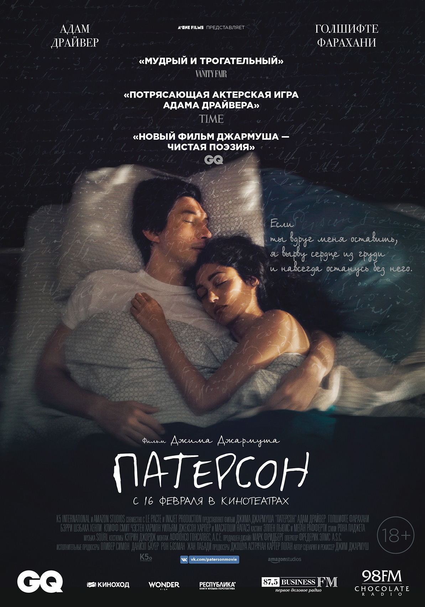
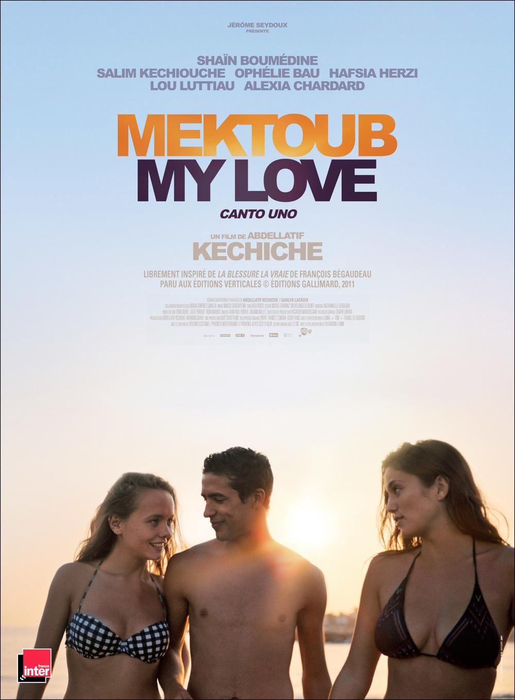

Патерсон
[18+]
21:00–23:00
2016
Драма
Франция, Германия, США
Джим Джармуш
Русский
Жизнь Патерсона – сплошная романтика: он работает водителем автобуса в городе Патерсон, штат Нью-Джерси, а в свободное время пишет стихи для любимой жены Лоры. Патерсон облачает красоту повседневности в стихи и встречает поэтов повсюду – такова магия города - родины поэтов Аллена Гинзберга и Уильяма Карлоса Уильямса. Патерсон пишет в стол и даже не мечтает публиковаться, однако одно маленькое событие меняет его планы.
MTE2NDUyMzoxMTY0NTI2OjA6MDoxMTY0OTMwOjExNjQ3ODg6MDowOjQ6MTE2NDUzOTpydTowOjA6MDplZDk0NWQ2Yjk5NmZmNDU2NTdjOWRjNzc3MjE0M2E5MzJjMzIyYjY2

Мектуб, моя любовь
[18+]
00:00–2:00
2017
Мелодрама, комедия
Франция, Италия
Абделатиф Кешиш
Русский
Жаркое лето на юге Франции. Молодой сценарист Амин возвращается на время летних каникул домой, на побережье Лионского залива. Кузены, кузины, друзья, студентки из Ниццы – все здесь утоляют жажду, танцуют, купаются в море, сплетничают, ревнуют и занимаются любовью. Офелия любит Тони, но обручена с Клеманом. Шарлотта тоже любит Тони, Тони любит женщин, как и Селин, но Селин больше любит отвязные вечеринки. Вслед за этими безрассудными и разгоряченными телами Амин пускается на поиски любви, вдохновения, а если повезет - и судьбы.
MTE2NDUyMzoxMTY0NTI2OjA6MDoxMTY0OTQ5OjExNjQ3ODg6MDowOjQ6MTE2NDUzOTpydTowOjA6MDplZDk0NWQ2Yjk5NmZmNDU2NTdjOWRjNzc3MjE0M2E5MzJjMzIyYjY2